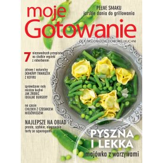
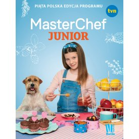

Redakcja poleca

Moje Gotowanie 5/2020
Kup teraz
Roczna prenumerata magazynu Moje Gotowanie + książka 'Szybko i zdrowo. Fast food w wersji fit'
Kup teraz
Fit słodkości. Naturalnie słodkie i zdrowe
Kup teraz

MasterChef Junior. Piąta polska edycja programu
Kup teraz